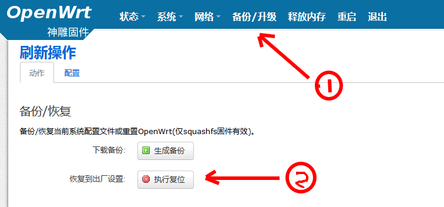
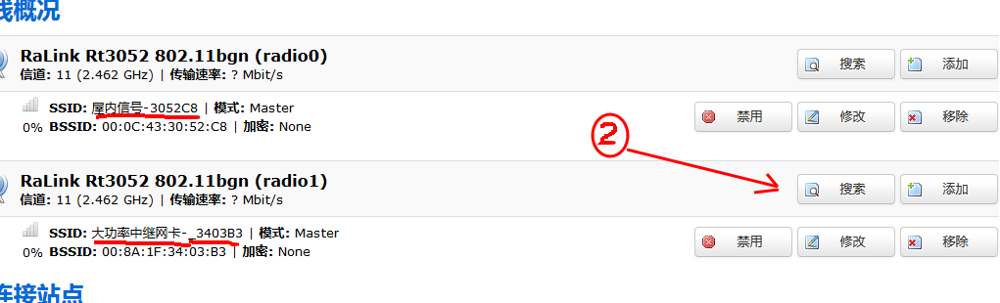
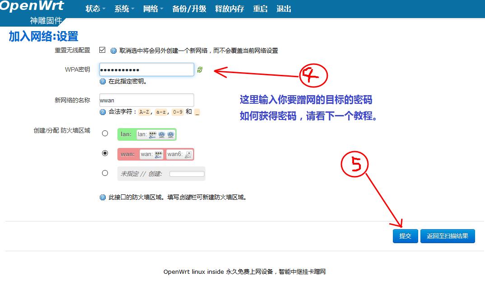
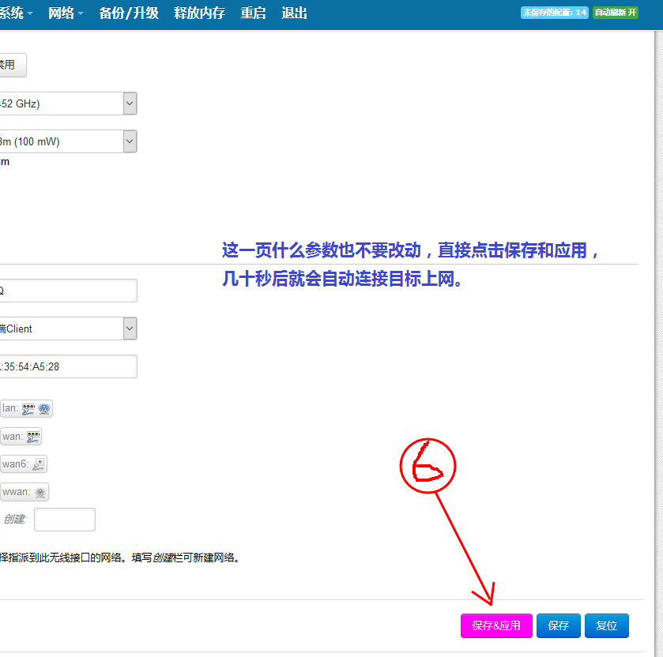
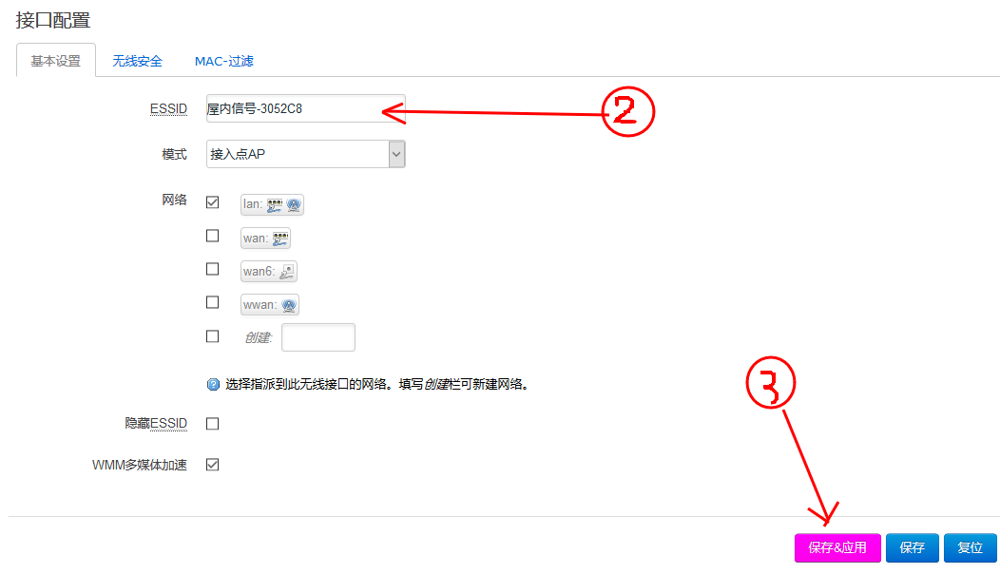

关于蹭网，很多朋友不知道如何入手，我编译的HG255D路由器，是一个智能linux系统，已经包含了3070芯片的usb无线网卡驱动。
只要插上usb网卡，即可增加路由器的超距离wifi搜索并中继的强大功能。
首先这个路由器的挂卡中继操作方法介绍：
1.路由器的复原：（ab两种方法都可以）
a.如果你在设置时出现错误或者信号凌乱了，可以在打开电源的状态下，用一根牙签顶住电源插口旁边的小孔5秒，然后指示灯会全灭并重启。
b.在路由器管理页面点击菜单“备份升级”，在打开页面点击“执行复位”，几十秒后将会看到路由器重启。

2：如何蹭网：
插入usb大功率外置无线网卡，再打开电源。然后点击“网络”--“无线”，出现两个信号，选择外置网卡的信号栏，点击搜索，然后找到你已经有密码的wifi信号，
点击加入，然后在出来的页面输入密码，点击提交，在下一页点击“保存和应用”。等一会，你就可以上网啦。





3：如何修改自己的wifi名称：
点击“网络”--“无线”，点击对象栏的“修改”进入wifi编辑页面，在接口配置的ESSID就是本机内置无线广播的wifi名称，自行修改，如需密码，点击“无线安全”选项卡，
选择加密类型，输入自己的密码，然后点击下面的“保存和应用”。一分钟后你就可以搜到新的信号名称了。

